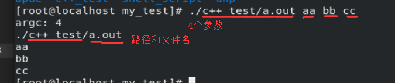
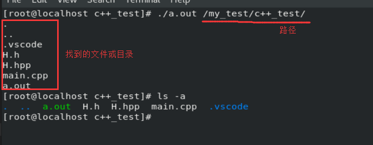
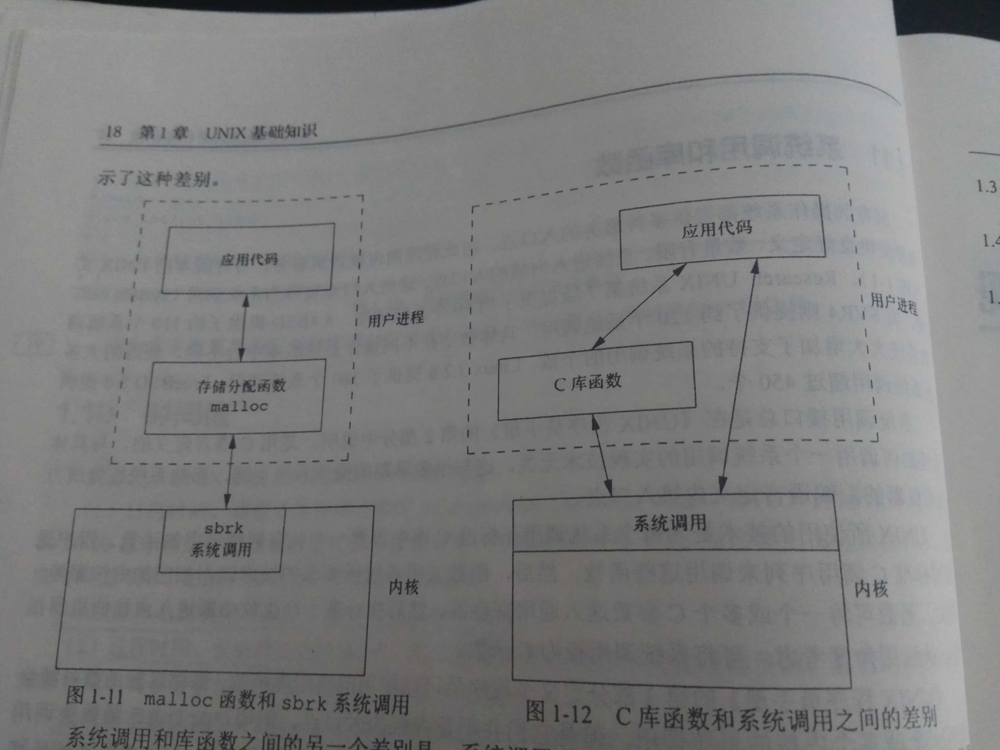
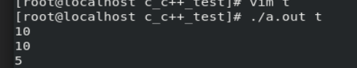
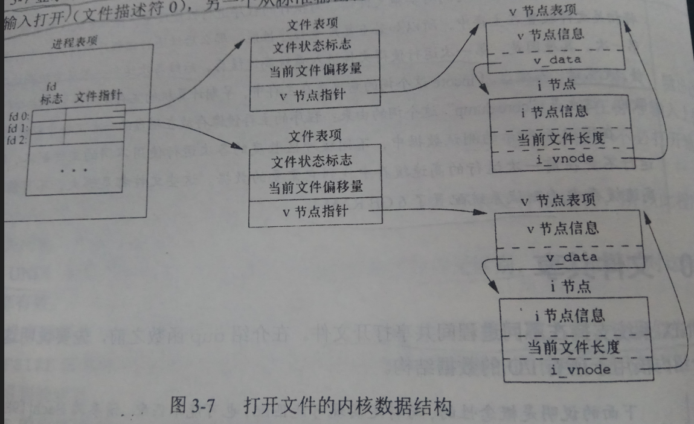
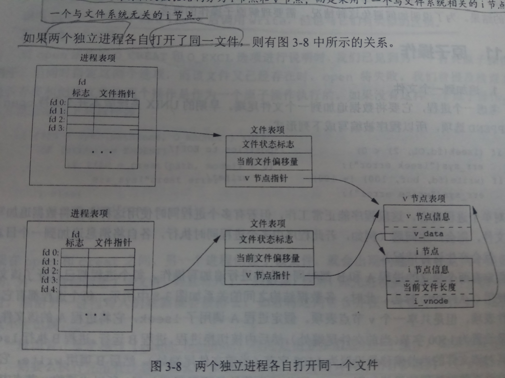
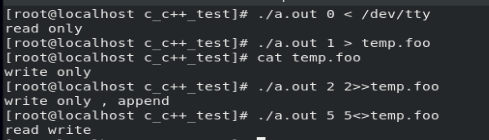

基于cent8与Unix高级环境编程第三版
配置官网上下载的源码
解压文件后，将里面include目录的apue.h与lib目录的error.c拷贝到usr/include
Unix基础
Unix结构：应用程序 -> shell或公用函数 -> 系统调用 -> 内核
文件和目录
argc命令行的参数数量
argvargv[0]表示程序的路径和名称，之后的都是命令行的参数
输出文件名称以及路径，和所有命令行的参数
1 | void func(const int &argc, char **argv){ |

列出目录中所有文件
1 | //这本书每一个程序都会有的头文件 |

输入和输出
不带缓冲区的I/O函数open read write lseek close
使用标准输入，读取一行一个字符的程序
1 | void my_io(){ |

vim打开test文件

如果使用./a.out << infile >> outfileinfile的内容会复制到outfile
使用标准输入，读取一整行输入
1 | void my_io2(){ |
程序与进程
获取进程ID（PID）
1 | int main(int argc, char **argv){ |
从标准输入读取命令，然后执行
类似于shell
1 | void in_shell(){ |
出错处理
1 | #include "apue.h" |
输出用户id和该用户的组id
getuid函数，输出用户id
getgid函数，输出当前用户的组id
1 | printf("uid = %d\ngid = %d\n", getuid(), getgid()); |
信号
用于通知进程发生了某种情况
进程的三种处理信号的方式
忽略，不推荐
按系统默认方式处理，除数为0则终止程序
提供自定义的函数
为上面的in_shell函数，添加信号
1 | // + |
时间值
时钟时间进程运行的时间总量
用户cpu时间执行用户指令所用的时间量
系统cpu时间为该进程执行内核所经历的时间
系统调用和库函数

文件I/O
基于fcntl.h与unistd.h头文件
文件描述符是一个索引（非负整数）用来访问文件，打开或新建文件内核会返回一个文件
描述符，文件的读写会用到文件描述符
open函数与openat函数，打开或创建文件，openat第一个参数为文件描述符
close函数，关闭打开文件
1 | #include "apue.h" |
creat函数，创建新文件，效果等同于open(path, O_WRONLY|O_CREATE|O_TRUNC, mode)
lseek函数，设置文件偏移量
1 | #include "apue.h" |
write函数，从打开文件写入数据
1 | #include "apue.h" |
空洞文件：文件偏移量大于当前文件长度，也就是强行增加文件大小，那些多出来的文件
数据，每个字节默认的数据为\0，这些多出来的数据就是文件的空洞
空洞文件的作用有：
比如下载文件，会生成一个与你所下载文件大小一样的文件，但里面没有数据，需要等待
下载，把数据写进这个空洞文件
read函数，从打开文件读取数据
1 | #include "apue.h" |
测试数据：
hellow
word!
12345678900
注意：记得把换行符给算进去，一共22个字节加上3个换行符的字节

1 | /* 将标准输入的数据，输入到文件 */ |
文件共享与原子操作
文件共享
每个文件或设备都有一个v节点（结构），v节点里有一个i节点（索引节点）
Linux没有使用v节点，而是使用i节点，虽然实现不同但概念一样
该进程有两个不同的打开文件：一个文件从标准输入打开（文件描述符0）一个文件
从标准输出打开（文件描述符1）

两个进程打开同一个文件

原子操作：要么执行所有步骤，要么不执行
dup返回与修改文件描述符
dup函数，返回当前可用的最小的文件描述符
1 | #include "apue.h" |
dup2函数，可用修改当前的文件描述符，假如fd等于fd2则返回fd2并且不关闭它（fd2已经打开
的情况下，需要将其关闭）
1 | #include "apue.h" |
sync保证实际文件与缓冲区内容的一致性
当写入数据时，内核会将数据复制到缓冲区，然后排入队列，延迟写入硬盘
sync函数，将修改过的块缓冲区排入 写队列，然后返回（并不会等待实际写磁盘操作结束）
fsync函数，只对由文件描述符指定的文件起作用（磁盘写入结束才返回）
fdatasync函数，只影响文件数据部分
fcntl修改 已打开文件 的属性
只需要主动打开文件的描述符，就可以修改描述符的属性
fcntl函数，出错会返回-1
函数原型与所属头文件：
#include <fcntl.h>
int fcntl(int fd, int cmd, … /* int arg */)fd : 文件标识符
cmd : 命令,一共有11种
arg : 基于cmd的值，传入的第三个参数
功能：
复制一个已有文件描述符
获取/设置 文件描述符标志
获取/设置 文件状态标志
获取/设置 异步I/O所有权
获取/设置 记录锁
例子
1 |
|

第一个为输出文件状态标志
第二个为将文件状态标志输入到文件
第三个为修改文件描述符标志，改为写追加模式
第四个为修改文件描述符标志，改为读写模式
ioctl I/O操作的杂物箱（终端I/O最常用的）
作用于：文件IO，磁带IO，套接字IO，终端IO
#include <unistd.h>
#include <sys/ioctl.h>
int ioctl(int fd, int request, …)
返回值：出错返回-1fd : 文件描述符
request : 一个依赖于设备的请求
/dev/fd目录
里面有0,1,2,3等文件，打开这些文件，等同于复制描述符（假定描述符是打开的）
fd = open(“/dev/fd/0”, mode) 等同于 fd = dup(0)
作用：/dev/fd目录里的文件主要由shell使用，提高文件名参数的一致性，看起来更加清晰